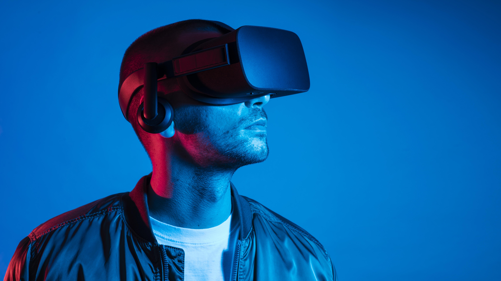

Futuro da Internet
A internet está em constante evolução e continuará passando por grandes transformações nos próximos anos. Novas tecnologias estão sendo desenvolvidas para tornar a conexão mais rápida, inteligente e integrada ao dia a dia das pessoas.
O futuro da internet promete trazer ainda mais inovação, impactando áreas como comunicação, educação, saúde, trabalho e entretenimento.
Internet das Coisas (IoT)
A Internet das Coisas, também conhecida como IoT (Internet of Things), é uma tecnologia que permite a conexão de objetos do dia a dia à internet.
Isso significa que dispositivos como geladeiras, lâmpadas, carros e até relógios podem se conectar à rede e trocar informações. Essa tecnologia facilita a automação de tarefas e torna os ambientes mais inteligentes.
Inteligência Artificial
A Inteligência Artificial é uma das principais tecnologias que estão moldando o futuro da internet. Ela permite que sistemas aprendam, analisem dados e tomem decisões de forma automática.
Na internet, a inteligência artificial já é utilizada em recomendações de vídeos, assistentes virtuais, reconhecimento de imagens e muito mais. No futuro, seu uso tende a se tornar ainda mais avançado e presente no cotidiano.
Internet mais rápida: 5G e 6G
A evolução das redes móveis também é fundamental para o futuro da internet. O 5G já está sendo implantado em várias regiões do mundo, oferecendo maior velocidade e menor tempo de resposta.
No futuro, o 6G promete conexões ainda mais rápidas e eficientes, permitindo o desenvolvimento de novas tecnologias e aplicações que exigem alto desempenho.
Realidade Virtual e Metaverso
A realidade virtual e o conceito de metaverso representam uma nova forma de interação na internet. Essas tecnologias permitem que pessoas entrem em ambientes digitais imersivos, como se estivessem dentro deles.
No metaverso, será possível trabalhar, estudar, jogar e socializar em espaços virtuais, ampliando as possibilidades de uso da internet.

Segurança e privacidade
Com o aumento do uso da internet, a preocupação com segurança e privacidade também cresce. Proteger dados pessoais e evitar ataques digitais será cada vez mais importante.
No futuro, novas tecnologias de segurança serão desenvolvidas para garantir maior proteção aos usuários e às informações compartilhadas online.
Tecnologias do futuro da internet
| Tecnologia | Descrição | Impacto |
|---|---|---|
| Internet das Coisas | Conexão de objetos à internet | Automação e praticidade |
| Inteligência Artificial | Sistemas que aprendem e tomam decisões | Personalização e eficiência |
| 5G/6G | Redes móveis de alta velocidade | Conexões mais rápidas |
| Metaverso | Ambientes virtuais imersivos | Nova forma de interação |
| Segurança digital | Proteção de dados e informações | Mais segurança para usuários |
Conclusão
O futuro da internet será marcado por inovação e transformação. Novas tecnologias irão mudar a forma como as pessoas vivem, trabalham e se comunicam.
À medida que a internet evolui, ela se torna cada vez mais essencial na sociedade, trazendo benefícios, mas também novos desafios que precisarão ser enfrentados.
Voltar para página inicial Voltar para página anterior Ir para próxima página